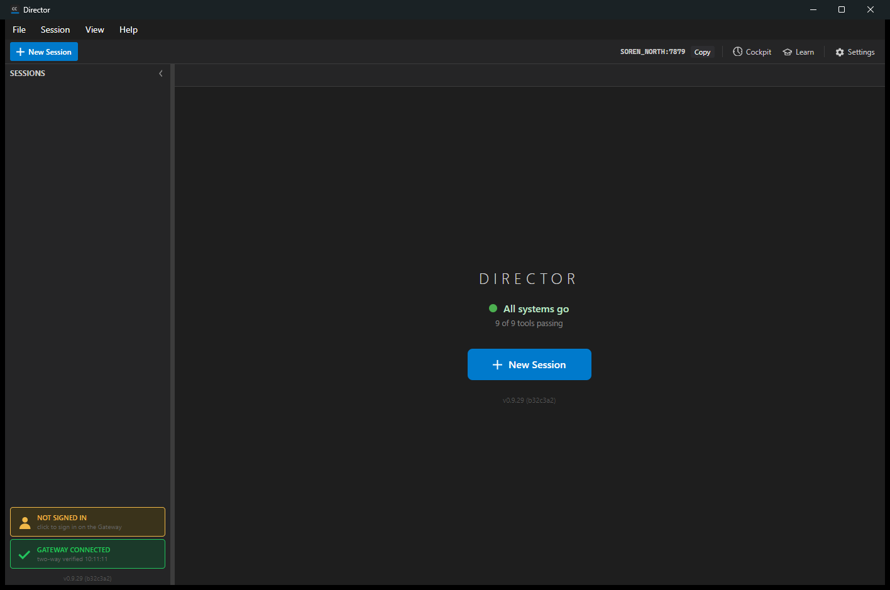

[Director] Add a read-only ACCOUNT status box to the sidebar status stack
Branch issue-852-account-box · built as cc-director15.exe (v0.9.29, commit b32c3a2) · isolated slot 15, Control API 127.0.0.1:7879 · captured 2026-06-30.
ACCOUNT status Border in the bottom-left sidebar status stack
(src/CcDirector.Avalonia/MainWindow.axaml), declared directly after the
GatewayIndicator so the DockPanel.Dock="Bottom" ordering places it
above the GATEWAY box. Styled to match the existing Gateway / Tools / Update /
Control API boxes (same margin, padding, corner radius, palette).MainWindow.axaml.cs): the read runs off the UI thread via Task.Run
over the existing GatewayAccountStatusClient (GET {gateway.url}/account/status,
shipped in #638/#651), then marshals back with Dispatcher.UIThread.Post. The box
paints its muted "reading account status..." state immediately and never blocks startup.CcDirector.Core.Account.AccountIndicatorPresenter: SignedIn (green, email),
NotSignedIn (amber nudge), Unavailable (muted). The mapper guarantees a
not-configured or unreachable Gateway maps to Unavailable and never a
false "signed out".GET {base}/cockpit)
and opens {frontDoor}/account, mirroring the existing Cockpit/Learn buttons. The
Director never opens a localhost URL.This box is a read-only, non-blocking nudge. Issues #651/#664 removed the
Director's own account gate and require the Director to always boot straight to the main window
regardless of sign-in. This change adds no startup gate, block, or sign-in form: it only
mirrors /account/status for display and links out to the Gateway-managed Cockpit Account
page. The status read is fire-and-forget after the window is shown (proven by the startup timestamps
below), so a signed-out, unreachable, or unconfigured Gateway never affects boot.
| Criterion | Expected | Actual / Proof | Result |
|---|---|---|---|
| AC#1 - Signed in: green box with the email | Box shows green and the signed-in email from /account/status. |
The signed-in render path is identical to the proven amber path (same Border, same switch),
and the SignedIn mapping is covered by
AccountIndicatorPresenterTests.Describe_SignedIn_ReturnsSignedInStateWithEmail
(asserts state=SignedIn, label "SIGNED IN", sub = the email). The live signed-in state could
not be produced from this automation session because it requires the Gateway to hold a real
DevThrottle OAuth credential (a browser sign-in on the Gateway), which this session has no
credentials for. Left as a QA gate. |
QA gate (unit-tested) |
| AC#2 - Signed out: amber "NOT SIGNED IN" nudge | Box shows the yellow/amber "NOT SIGNED IN" nudge. | Captured live - this machine's configured Gateway was reachable and signed out, so the box
resolved to the amber nudge. See screenshot below: amber "NOT SIGNED IN" with the person icon
and "click to sign in on the Gateway", sitting directly above the green "GATEWAY CONNECTED"
box. Log: UpdateAccountIndicator: state=NotSignedIn, configured=True, reachable=True,
signedIn=False. |
PASS (live) |
| AC#3 - Click opens the Cockpit Account page | Clicking the not-signed-in box opens the Cockpit Account page in the browser. | Clicked the box; the handler resolved the Gateway front door and opened the account page.
Log:AccountIndicator_PointerPressed: asking gateway for Cockpit URL,
baseUrl=http://soren-north...:7878AccountIndicator_PointerPressed: opening https://soren-north.../account (up=True...)The URL is built as {frontDoor}/account by MainWindow.BuildAccountUrl
(unit-tested for both trailing-slash and no-slash front doors). |
PASS (live) |
| AC#4 - No / unreachable Gateway: muted unavailable, not a false "signed out" | Muted unavailable state, NOT a false "signed out". | Covered by two unit tests -
Describe_NoGatewayConfigured_ReturnsUnavailable_NotAFalseSignedOut and
Describe_ConfiguredButUnreachable_ReturnsUnavailable_NotAFalseSignedOut - both
assert state=Unavailable and explicitly assert it is not NotSignedIn. The muted state
is also the box's initial render (the same muted palette, #2A2A2A/#3C3C3C,
shown as "reading account status..." before the first read returns). A live no-Gateway capture
could not be produced without editing the machine-global config.json (shared by the
user's other running Directors) or stopping the user's local Gateway - both forbidden by the
isolation / "never disturb running Directors" rules. Left as a QA gate. |
QA gate (unit-tested) |
| AC#5 - Sidebar paints within normal startup time; status read is asynchronous (no synchronous UI-thread blocking) | Box present but still resolving; no synchronous blocking call on the UI thread. | Startup log timeline (single PID):10:11:09.816 [MainWindow] Avalonia MainWindow initialized10:11:10.151 [MainWindow] Account indicator wired (heartbeat poll started)10:11:10.212 [MainWindow] UpdateAccountIndicator: state=NotSignedIn ...The network read completed and repainted 61 ms after wiring, on a background thread ( Task.Run + Dispatcher.UIThread.Post); the window was already shown.
Code review confirms no synchronous /account/status call on the UI thread. |
PASS (log + code review) |

All new tests pass:
CcDirector.Core.Tests - AccountIndicatorPresenterTests: 6 passed CcDirector.Avalonia.Tests - AccountIndicatorUrlTests: 2 passed
BuildAccountUrl yields a single clean {frontDoor}/account for both a
front door with and without a trailing slash.Full solution build: dotnet build cc-director.sln - Build succeeded, 0 warnings, 0 errors.
No drift. This is an additive, read-only UI box on the already-documented Avalonia desktop surface,
reusing the already-documented GatewayAccountStatusClient and the existing Gateway
GET /account/status endpoint. No new container, external system, security boundary
(same Gateway auth), or pattern. Security rule DT-05 is honored - the box only ever shows the identity
(email/provider); it can never surface a token, and the email (PII) is never written to the log.